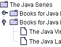
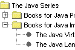

Lesson: Using Swing Components
Section: How to Use Various Components
How to Use Trees
With the
JTree class, you can display hierarchical data. A JTree object does not actually contain your data; it simply provides a view of the data. Like any non-trivial Swing component, the tree gets data by querying its data model. Here is a picture of a tree:
As the preceding figure shows, JTree displays its data vertically. Each row displayed by the tree contains exactly one item of data, which is called a node. Every tree has a root node from which all nodes descend. By default, the tree displays the root node, but you can decree otherwise. A node can either have children or not. We refer to nodes that can have children — whether or not they currently have children — as branch nodes. Nodes that can not have children are leaf nodes.
Branch nodes can have any number of children. Typically, the user can expand and collapse branch nodes — making their children visible or invisible — by clicking them. By default, all branch nodes except the root node start out collapsed. A program can detect changes in branch nodes' expansion state by listening for tree expansion or tree-will-expand events, as described in How to Write a Tree Expansion Listener and How to Write a Tree-Will-Expand Listener.
A specific node in a tree can be identified either by a TreePath, an object that encapsulates a node and all of its ancestors, or by its display row, where each row in the display area displays one node.
- An expanded node is a non-leaf node that will display its children when all its ancestors are expanded.
- A collapsed node is one which hides them.
- A hidden node is one which is under a collapsed ancestor.
The rest of this section discusses the following topics:
- Creating a Tree
- Responding to Node Selection
- Customizing a Tree's Display
- Dynamically Changing a Tree
- Creating a Data Model
- The Tree API
- Examples that Use Trees
Creating a Tree
Here is a picture of an application, the top half of which displays a tree in a scroll pane.
Try this:
- Click the Launch button to run the Tree Demo using
Java™ Web Start (download JDK 7 or later). Alternatively, to compile and run the example yourself, consult the example index.

- Expand one or more nodes.
You can do this by clicking the circle to the left of the item. - Collapse a node.
You do this by clicking the circle to the left of an expanded node.
The following code, taken from
TreeDemo.java, creates the JTree object and puts it in a scroll pane:
//Where instance variables are declared:
private JTree tree;
...
public TreeDemo() {
...
DefaultMutableTreeNode top =
new DefaultMutableTreeNode("The Java Series");
createNodes(top);
tree = new JTree(top);
...
JScrollPane treeView = new JScrollPane(tree);
...
}
The code creates an instance of
DefaultMutableTreeNode to serve as the root node for the tree. It then creates the rest of the nodes in the tree. After that, it creates the tree, specifying the root node as an argument to the JTree constructor. Finally, it puts the tree in a scroll pane, a common tactic because showing the full, expanded tree would otherwise require too much space.
Here is the code that creates the nodes under the root node:
private void createNodes(DefaultMutableTreeNode top) {
DefaultMutableTreeNode category = null;
DefaultMutableTreeNode book = null;
category = new DefaultMutableTreeNode("Books for Java Programmers");
top.add(category);
//original Tutorial
book = new DefaultMutableTreeNode(new BookInfo
("The Java Tutorial: A Short Course on the Basics",
"tutorial.html"));
category.add(book);
//Tutorial Continued
book = new DefaultMutableTreeNode(new BookInfo
("The Java Tutorial Continued: The Rest of the JDK",
"tutorialcont.html"));
category.add(book);
//Swing Tutorial
book = new DefaultMutableTreeNode(new BookInfo
("The Swing Tutorial: A Guide to Constructing GUIs",
"swingtutorial.html"));
category.add(book);
//...add more books for programmers...
category = new DefaultMutableTreeNode("Books for Java Implementers");
top.add(category);
//VM
book = new DefaultMutableTreeNode(new BookInfo
("The Java Virtual Machine Specification",
"vm.html"));
category.add(book);
//Language Spec
book = new DefaultMutableTreeNode(new BookInfo
("The Java Language Specification",
"jls.html"));
category.add(book);
}
The argument to the DefaultMutableTreeNode constructor is the user object which is an object that contains or points to the data associated with the tree node. The user object can be a string, or it can be a custom object. If you implement a custom object, you should implement its toString method so that it returns the string to be displayed for that node. JTree, by default, renders each node using the value returned from toString, so it is important that toString returns something meaningful. Sometimes, it is not feasible to override toString; in such a scenario you can override the convertValueToText of JTree to map the object from the model into a string that gets displayed.
For example, the BookInfo class used in the previous code snippet is a custom class that holds two pieces of data: the name of a book, and the URL for an HTML file describing the book. The toString method is implemented to return the book name. Thus, each node associated with a BookInfo object displays a book name.
Note: You can specify text formatting in a tree node by putting HTML tags in the string for the node. See Using HTML in Swing Components for details.
To summarize, you can create a tree by invoking the JTree constructor, specifying the class that implements TreeNode as an argument. You should probably put the tree inside a scroll pane, so that the tree would not take up too much space. You do not have to do anything to make the tree nodes expand and collapse in response to user clicks. However, you do have to add some code to make the tree respond when the user selects a node — by clicking the node, for example.
Responding to Node Selection
Responding to tree node selections is simple. You implement a tree selection listener and register it on the tree. The following code shows the selection-related code from the TreeDemo program:
//Where the tree is initialized:
tree.getSelectionModel().setSelectionMode
(TreeSelectionModel.SINGLE_TREE_SELECTION);
//Listen for when the selection changes.
tree.addTreeSelectionListener(this);
...
public void valueChanged(TreeSelectionEvent e) {
//Returns the last path element of the selection.
//This method is useful only when the selection model allows a single selection.
DefaultMutableTreeNode node = (DefaultMutableTreeNode)
tree.getLastSelectedPathComponent();
if (node == null)
//Nothing is selected.
return;
Object nodeInfo = node.getUserObject();
if (node.isLeaf()) {
BookInfo book = (BookInfo)nodeInfo;
displayURL(book.bookURL);
} else {
displayURL(helpURL);
}
}
The preceding code performs these tasks:
- Gets the default
TreeSelectionModelfor the tree, and then sets it up so that at most one tree node at a time can be selected. - Registers an event handler on the tree. The event handler is an object that implements the
TreeSelectionListenerinterface. - In the event handler, determines which node is selected by invoking the tree's
getLastSelectedPathComponentmethod. - Uses the
getUserObjectmethod to get the data associated with the node.
For more details about handling tree selection events, see How to Write a Tree Selection Listener.
Customizing a Tree's Display
Here is a picture of some tree nodes, as drawn by the Java, Windows, and Mac OS look and feel implementations.
|  |  |
 |
| Java look and feel | Windows look and feel | Mac OS look and feel |
As the preceding figures show, a tree conventionally displays an icon and some text for each node. You can customize these, as we will show shortly.
A tree typically also performs some look-and-feel-specific painting to indicate relationships between nodes. You can customize this painting in a limited way. First, you can use tree.setRootVisible(true) to show the root node or tree.setRootVisible(false) to hide it. Second, you can use tree.setShowsRootHandles(true) to request that a tree's top-level nodes — the root node (if it is visible) or its children (if not) — have handles that let them be expanded or collapsed.
If you are using the Java look and feel, you can customize whether lines are drawn to show relationships between tree nodes. By default, the Java look and feel draws angled lines between nodes. By setting the JTree.lineStyle client property of a tree, you can specify a different convention. For example, to request that the Java look and feel use only horizontal lines to group nodes, use the following code:
tree.putClientProperty("JTree.lineStyle", "Horizontal");
To specify that the Java look and feel should draw no lines, use this code:
tree.putClientProperty("JTree.lineStyle", "None");
The following snapshots show the results of setting the JTree.lineStyle property, when using the Java look and feel.
|
|
|
|
"Angled" (default) |
"Horizontal" |
"None" |
No matter what the look and feel, the default icon displayed by a node is determined by whether the node is a leaf and, if not, whether it is expanded. For example, in the Windows and Motif look and feel implementations, the default icon for each leaf node is a dot; in the Java look and feel, the default leaf icon is a paper-like symbol. In all the look-and-feel implementations we have shown, branch nodes are marked with folder-like symbols. Some look and feels might have different icons for expanded branches versus collapsed branches.
You can easily change the default icon used for leaf, expanded branch, or collapsed branch nodes. To do so, you first create an instance of
DefaultTreeCellRenderer. You could always create your own TreeCellRenderer implementation from scratch, reusing whatever components you like. Next, specify the icons to use by invoking one or more of the following methods on the renderer: setLeafIcon (for leaf nodes), setOpenIcon (for expanded branch nodes), setClosedIcon (for collapsed branch nodes). If you want the tree to display no icon for a type of node, then specify null for the icon. Once you have set up the icons, use the tree's setCellRenderer method to specify that the DefaultTreeCellRenderer paint its nodes. Here is an example, taken from
TreeIconDemo.java:
ImageIcon leafIcon = createImageIcon("images/middle.gif");
if (leafIcon != null) {
DefaultTreeCellRenderer renderer =
new DefaultTreeCellRenderer();
renderer.setLeafIcon(leafIcon);
tree.setCellRenderer(renderer);
}
Here is the screenshot of TreeIconDemo:
Try this:
- Click the Launch button to run the TreeIconDemo using
Java™ Web Start (download JDK 7 or later). Alternatively, to compile and run the example yourself, consult the example index.
If you want finer control over the node icons or you want to provide tool tips, you can do so by creating a subclass of DefaultTreeCellRenderer and overriding the getTreeCellRendererComponent method. Because DefaultTreeCellRenderer is a subclass of JLabel, you can use any JLabel method — such as setIcon — to customize the DefaultTreeCellRenderer.
The following code, from
TreeIconDemo2.java, creates a cell renderer that varies the leaf icon depending on whether the word "Tutorial" is in the node's text data. The renderer also specifies tool-tip text, as the bold lines show.
Try this:
- Click the Launch button to run the TreeIconDemo2 using
Java™ Web Start (download JDK 7 or later). Alternatively, to compile and run the example yourself, consult the example index.
//...where the tree is initialized:
//Enable tool tips.
ToolTipManager.sharedInstance().registerComponent(tree);
ImageIcon tutorialIcon = createImageIcon("images/middle.gif");
if (tutorialIcon != null) {
tree.setCellRenderer(new MyRenderer(tutorialIcon));
}
...
class MyRenderer extends DefaultTreeCellRenderer {
Icon tutorialIcon;
public MyRenderer(Icon icon) {
tutorialIcon = icon;
}
public Component getTreeCellRendererComponent(
JTree tree,
Object value,
boolean sel,
boolean expanded,
boolean leaf,
int row,
boolean hasFocus) {
super.getTreeCellRendererComponent(
tree, value, sel,
expanded, leaf, row,
hasFocus);
if (leaf && isTutorialBook(value)) {
setIcon(tutorialIcon);
setToolTipText("This book is in the Tutorial series.");
} else {
setToolTipText(null); //no tool tip
}
return this;
}
protected boolean isTutorialBook(Object value) {
DefaultMutableTreeNode node =
(DefaultMutableTreeNode)value;
BookInfo nodeInfo =
(BookInfo)(node.getUserObject());
String title = nodeInfo.bookName;
if (title.indexOf("Tutorial") >= 0) {
return true;
}
return false;
}
}
Here is the result:
You might be wondering how a cell renderer works. When a tree paints each node, neither the JTree nor its look-and-feel-specific implementation actually contains the code that paints the node. Instead, the tree uses the cell renderer's painting code to paint the node. For example, to paint a leaf node that has the string "The Java Programming Language", the tree asks its cell renderer to return a component that can paint a leaf node with that string. If the cell renderer is a DefaultTreeCellRenderer, then it returns a label that paints the default leaf icon followed by the string.
A cell renderer only paints; it cannot handle events. If you want to add event handling to a tree, you need to register your handler on either the tree or, if the handling occurs only when a node is selected, the tree's cell editor. For information about cell editors, see Concepts: Editors and Renderers. That section discusses table cell editors and renderers, which are similar to tree cell editors and renderers.
Dynamically Changing a Tree
The following figure shows an application called DynamicTreeDemo that lets you add nodes to and remove nodes from a visible tree. You can also edit the text in each node.
The application is based on an example provided by tutorial reader Richard Stanford.
Try this:
- Click the Launch button to run the DynamicTreeDemo using
Java™ Web Start (download JDK 7 or later). Alternatively, to compile and run the example yourself, consult the example index.
Here is the code that initializes the tree:
rootNode = new DefaultMutableTreeNode("Root Node");
treeModel = new DefaultTreeModel(rootNode);
treeModel.addTreeModelListener(new MyTreeModelListener());
tree = new JTree(treeModel);
tree.setEditable(true);
tree.getSelectionModel().setSelectionMode
(TreeSelectionModel.SINGLE_TREE_SELECTION);
tree.setShowsRootHandles(true);
By explicitly creating the tree's model, the code guarantees that the tree's model is an instance of
DefaultTreeModel. That way, we know all the methods that the tree model supports. For example, we know that we can invoke the model's insertNodeInto method, even though that method is not required by the TreeModel interface.
To make the text in the tree's nodes editable, we invoke setEditable(true) on the tree. When the user has finished editing a node, the model generates a tree model event that tells any listeners — including the JTree — that tree nodes have changed. Note that although DefaultMutableTreeNode has methods for changing a node's content, changes should go through the DefaultTreeModel cover methods. Otherwise, the tree model events would not be generated, and listeners such as the tree would not know about the updates.
To be notified of node changes, we can implement a
TreeModelListener. Here is an example of a tree model listener that detects when the user has typed in a new name for a tree node:
class MyTreeModelListener implements TreeModelListener {
public void treeNodesChanged(TreeModelEvent e) {
DefaultMutableTreeNode node;
node = (DefaultMutableTreeNode)
(e.getTreePath().getLastPathComponent());
/*
* If the event lists children, then the changed
* node is the child of the node we have already
* gotten. Otherwise, the changed node and the
* specified node are the same.
*/
try {
int index = e.getChildIndices()[0];
node = (DefaultMutableTreeNode)
(node.getChildAt(index));
} catch (NullPointerException exc) {}
System.out.println("The user has finished editing the node.");
System.out.println("New value: " + node.getUserObject());
}
public void treeNodesInserted(TreeModelEvent e) {
}
public void treeNodesRemoved(TreeModelEvent e) {
}
public void treeStructureChanged(TreeModelEvent e) {
}
}
Here is the code that the Add button's event handler uses to add a new node to the tree:
treePanel.addObject("New Node " + newNodeSuffix++);
...
public DefaultMutableTreeNode addObject(Object child) {
DefaultMutableTreeNode parentNode = null;
TreePath parentPath = tree.getSelectionPath();
if (parentPath == null) {
//There is no selection. Default to the root node.
parentNode = rootNode;
} else {
parentNode = (DefaultMutableTreeNode)
(parentPath.getLastPathComponent());
}
return addObject(parentNode, child, true);
}
...
public DefaultMutableTreeNode addObject(DefaultMutableTreeNode parent,
Object child,
boolean shouldBeVisible) {
DefaultMutableTreeNode childNode =
new DefaultMutableTreeNode(child);
...
treeModel.insertNodeInto(childNode, parent,
parent.getChildCount());
//Make sure the user can see the lovely new node.
if (shouldBeVisible) {
tree.scrollPathToVisible(new TreePath(childNode.getPath()));
}
return childNode;
}
The code creates a node, inserts it into the tree model, and then, if appropriate, requests that the nodes above it be expanded and the tree scrolled so that the new node is visible. To insert the node into the model, the code uses the insertNodeInto method provided by the DefaultTreeModel class.
Creating a Data Model
If DefaultTreeModel does not suit your needs, then you will need to write a custom data model. Your data model must implement the
TreeModel interface. TreeModel specifies methods for getting a particular node of the tree, getting the number of children of a particular node, determining whether a node is a leaf, notifying the model of a change in the tree, and adding and removing tree model listeners.
Interestingly, the TreeModel interface accepts any kind of object as a tree node. It does not require that nodes be represented by DefaultMutableTreeNode objects, or even that nodes implement the
TreeNode interface. Thus, if the TreeNode interface is not suitable for your tree model, feel free to devise your own representation for tree nodes. For example, if you have a pre-existing hierarchical data structure, you do not need to duplicate it or force it into the TreeNode mold. You just need to implement your tree model so that it uses the information in the existing data structure.
The following figure shows an application called GenealogyExample that displays the descendants or ancestors of a particular person. (Thanks to tutorial reader Olivier Berlanger for providing this example.)
Try this:
- Click the Launch button to run the Genealogy Example using
Java™ Web Start (download JDK 7 or later). Alternatively, to compile and run the example yourself, consult the example index.
You can find the custom tree model implementation in
GenealogyModel.java. Because the model is implemented as an Object subclass instead of, say, a subclass of DefaultTreeModel, it must implement the TreeModel interface directly. This requires implementing methods for getting information about nodes, such as which is the root and what are the children of a particular node. In the case of GenealogyModel, each node is represented by an object of type Person, a custom class that does not implement TreeNode.
A tree model must also implement methods for adding and removing tree model listeners, and must fire TreeModelEvents to those listeners when the tree's structure or data changes. For example, when the user instructs GenealogyExample to switch from showing ancestors to showing descendants, the tree model makes the change and then fires an event to inform its listeners (such as the tree component).
How to Load Children Lazily
Lazy loading is a characteristic of an application when the actual loading and instantiation of a class is delayed until the point just before the instance is actually used.
Do we gain anything by loading them lazily? Yes, this would definitely add to the performance of an application. By lazily loading, you can dedicate the memory resources to load and instantiate an object only when it is actually used. You can also speed up the initial loading time of an application.
One of the ways you can lazily load children of a Tree is by utilizing the TreeWillExpandListener interface. For example, you can declare and load root, grandparent and parent of a Tree along with the application as shown in the following code:
Let us declare the root, grandparent and parent as shown below:
class DemoArea extends JScrollPane
implements TreeWillExpandListener {
.......
.......
private TreeNode createNodes() {
DefaultMutableTreeNode root;
DefaultMutableTreeNode grandparent;
DefaultMutableTreeNode parent;
root = new DefaultMutableTreeNode("San Francisco");
grandparent = new DefaultMutableTreeNode("Potrero Hill");
root.add(grandparent);
parent = new DefaultMutableTreeNode("Restaurants");
grandparent.add(parent);
dummyParent = parent;
return root;
}
You can load above declared nodes to the tree as shown in the following code:
TreeNode rootNode = createNodes(); tree = new JTree(rootNode); tree.addTreeExpansionListener(this); tree.addTreeWillExpandListener(this); ....... ....... setViewportView(tree);
Now, you can load children lazily to the application whenever the parent node Restaurants is visible in the application. To do this, let us declare two children in a separate method and call that method as shown in the following code:
private void LoadLazyChildren(){
DefaultMutableTreeNode child;
child = new DefaultMutableTreeNode("Thai Barbeque");
dummyParent.add(child);
child = new DefaultMutableTreeNode("Goat Hill Pizza");
dummyParent.add(child);
textArea.append(" Thai Barbeque and Goat Hill Pizza are loaded lazily");
}
.......
.......
public void treeWillExpand(TreeExpansionEvent e)
throws ExpandVetoException {
saySomething("You are about to expand node ", e);
int n = JOptionPane.showOptionDialog(
this, willExpandText, willExpandTitle,
JOptionPane.YES_NO_OPTION,
JOptionPane.QUESTION_MESSAGE,
null,
willExpandOptions,
willExpandOptions[1]);
LoadLazyChildren();
}
See How to Write a Tree-Will-Expand Listener for a description of Tree-Will-Expand listeners.
The Tree API
The tree API is quite extensive. The following tables list just a bit of the API, concentrating on the following categories:
- Tree-Related Classes and Interfaces
- Creating and Setting Up a Tree
- Implementing Selection
- Showing and Hiding Nodes
For more information about the tree API, see the API documentation for
JTree and for the various classes and interfaces in the
tree package. Also refer to The JComponent Class for information on the API JTree inherits from its superclass.
| Class or Interface | Purpose |
|---|---|
| JTree | The component that presents the tree to the user. |
| TreePath | Represents a path to a node. |
|
TreeNode MutableTreeNode DefaultMutableTreeNode |
The interfaces that the default tree model expects its tree nodes to implement, and the implementation used by the default tree model. |
|
TreeModel DefaultTreeModel |
Respectively, the interface that a tree model must implement and the usual implementation used. |
|
TreeCellRenderer DefaultTreeCellRenderer |
Respectively, the interface that a tree cell renderer must implement and the usual implementation used. |
|
TreeCellEditor DefaultTreeCellEditor |
Respectively, the interface that a tree cell editor must implement and the usual implementation used. |
|
TreeSelectionModel DefaultTreeSelectionModel |
Respectively, the interface that the tree's selection model must implement and the usual implementation used. |
|
TreeSelectionListener TreeSelectionEvent |
The interface and event type used for detecting tree selection changes. For more information, see Getting Started. |
|
TreeModelListener TreeModelEvent |
The interface and event type used for detecting tree model changes. For more information, see How to Write a Tree Model Listener. |
|
TreeExpansionListener TreeWillExpandListener TreeExpansionEvent |
The interfaces and event type used for detecting tree expansion and collapse. For more information, see How to Write a Tree Expansion Listener and How to Write a Tree-Will-Expand Listener. |
| ExpandVetoException | An exception that a TreeWillExpandListener can throw to indicate that the impending expansion/collapse should not happen. For more information, see
How to Write a Tree-Will-Expand Listener. |
| Constructor or Method | Purpose |
|---|---|
|
JTree(TreeNode) JTree(TreeNode, boolean) JTree(TreeModel) JTree() JTree(Hashtable) JTree(Object[]) JTree(Vector) |
Create a tree. The TreeNode argument specifies the root node, to be managed by the default tree model. The TreeModel argument specifies the model that provides the data to the table. The no-argument version of this constructor is for use in builders; it creates a tree that contains some sample data. If you specify a Hashtable, array of objects, or Vector as an argument, then the argument is treated as a list of nodes under the root node (which is not displayed), and a model and tree nodes are constructed accordingly.
The |
| void setCellRenderer(TreeCellRenderer) | Set the renderer that draws each node. |
|
void setEditable(boolean) void setCellEditor(TreeCellEditor) |
The first method sets whether the user can edit tree nodes. By default, tree nodes are not editable. The second sets which customized editor to use. |
| void setRootVisible(boolean) | Set whether the tree shows the root node. The default value is false if the tree is created using one of the constructors that takes a data structure, and true otherwise. |
| void setShowsRootHandles(boolean) | Set whether the tree shows handles for its leftmost nodes, letting you expand and collapse the nodes. The default is false. If the tree does not show the root node, then you should invoke setShowsRootHandles(true). |
|
void setDragEnabled(boolean) boolean getDragEnabled() |
Set or get the dragEnabled property, which must be true to enable drag handling on this component. The default value is false. See
Drag and Drop and Data Transfer for more details. |
| Method | Purpose |
|---|---|
| void addTreeSelectionListener(TreeSelectionListener) | Register a listener to detect when the a node is selected or deselected. |
|
void setSelectionModel(TreeSelectionModel) TreeSelectionModel getSelectionModel() |
Set or get the model used to control node selections. You can turn off node selection completely using setSelectionModel(null). |
|
void setSelectionMode(int) int getSelectionMode() (in TreeSelectionModel) |
Set or get the selection mode. The value can be CONTIGUOUS_TREE_SELECTION, DISCONTIGUOUS_TREE_SELECTION, or SINGLE_TREE_SELECTION (all defined in TreeSelectionModel). |
| Object getLastSelectedPathComponent() | Get the object representing the currently selected node. This is equivalent to invoking getLastPathComponent on the value returned by tree.getSelectionPath(). |
|
void setSelectionPath(TreePath) TreePath getSelectionPath() |
Set or get the path to the currently selected node. |
|
void setSelectionPaths(TreePath[]) TreePath[] getSelectionPaths() |
Set or get the paths to the currently selected nodes. |
|
void setSelectionPath(TreePath) TreePath getSelectionPath() |
Set or get the path to the currently selected node. |
| Method | Purpose |
|---|---|
|
void addTreeExpansionListener(TreeExpansionListener) void addTreeWillExpandListener(TreeWillExpandListener) |
Register a listener to detect when the tree nodes have expanded or collapsed, or will be expanded or collapsed, respectively. To veto an impending expansion or collapse, a TreeWillExpandListener can throw a ExpandVetoException. |
|
void expandPath(TreePath) void collapsePath(TreePath) |
Expand or collapse the specified tree path. |
| void scrollPathToVisible(TreePath) | Ensure that the node specified by the path is visible — that the path leading up to it is expanded and the node is in the scroll pane's viewing area. |
| void makeVisible(TreePath) | Ensure that the node specified by the path is viewable — that the path leading up to it is expanded. The node might not end up within the viewing area. |
|
void setScrollsOnExpand(boolean) boolean getScrollsOnExpand() |
Set or get whether the tree attempts to scroll to show previous hidden nodes. The default value is true. |
|
void setToggleClickCount(int) int getToggleClickCount() |
Set or get the number of mouse clicks before a node will expand or close. The default is two. |
| TreePath getNextMatch(String, int, Position.Bias) | Return the TreePath to the next tree element that begins with the specific prefix. |
Examples that Use Trees
This table lists examples that use JTree and where those examples are described.
| Example | Where Described | Notes |
|---|---|---|
| TreeDemo | Creating a Tree, Responding to Node Selection, Customizing a Tree's Display | Creates a tree that responds to user selections. It also has code for customizing the line style for the Java look and feel. |
| TreeIconDemo | Customizing a Tree's Display | Adds a custom leaf icon to TreeDemo. |
| TreeIconDemo2 | Customizing a Tree's Display | Customizes certain leaf icons and also provides tool tips for certain tree nodes. |
| DynamicTreeDemo | Dynamically Changing a Tree | Illustrates adding and removing nodes from a tree. Also allows editing of node text. |
| GenealogyExample | Creating a Data Model | Implements a custom tree model and custom node type. |
| TreeExpandEventDemo | How to Write a Tree Expansion Listener | Shows how to detect node expansions and collapses. |
| TreeExpandEventDemo2 | How to Write a Tree-Will-Expand Listener | Shows how to veto node expansions. |
If you are programming in JavaFX, see Tree View.